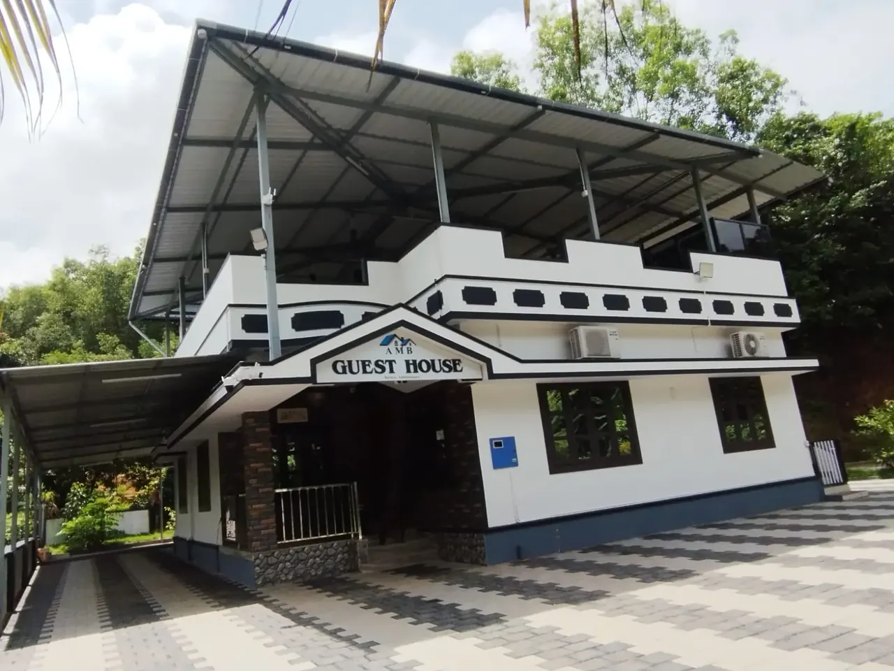

Services
Website development and digital services in Manipal.
Digital support built around how the business actually works. Website development is the foundation. Automation, search visibility and creative support are added only where they help customers understand, discover or contact the business.
Discuss your requirement ↗Service pages
Explore each service in detail.
Each page covers what is included, who it is for, related live work and common questions.
Business & WordPress websites
WordPress, custom-coded, responsive builds and redesigns.
Learn more ↗HospitalityHotel, resort & homestay websites
Rooms, galleries, location and direct booking enquiries.
Learn more ↗Food & beverageRestaurant websites & QR menus
Mobile menus, QR digital menus, timings and location.
Learn more ↗TravelTaxi & travel websites
Fleet, routes, service areas and one-tap WhatsApp booking.
Learn more ↗AI & automationAI chatbots & WhatsApp automation
Faster replies and organised enquiries without extra admin.
Learn more ↗VisibilityLocal SEO, GBP, GEO & AEO
Be found on Google, Maps and AI assistants like ChatGPT.
Learn more ↗Professional websites with a clear business purpose.
For businesses that need a credible, responsive website that explains the offer clearly and gives customers an obvious next step.
- Business websites
- WordPress website development
- Custom websites
- Website redesign
- Responsive websites

Websites shaped around the customer journey in your industry.
Hospitality, restaurant, taxi and travel websites need more than visual design—they need clear rooms, services, locations, booking or enquiry paths.
- Hotel websites
- Resort websites
- Homestay websites
- Restaurant websites & QR menus
- Taxi & travel websites
- Local business websites

Use automation where it removes repetitive work.
AI is useful when it improves response time, organizes enquiries or reduces repeated manual tasks—not because every business needs an “AI feature.”
- AI chatbots
- WhatsApp automation
- AI business assistants
- Product or service enquiry automation
- Workflow automation

Help search engines and customers understand the business.
Technical foundations, local relevance and consistent business information make it easier for search engines and AI systems to interpret the site accurately.
- Technical SEO
- Local SEO
- Keyword optimization
- Google Business Profile optimization
- GEO & AEO
- Google Ads support
- OTA listing support

Keep the business visually active after the website launches.
Ongoing digital support can include the content and creative work needed to maintain a consistent business presence.
- Social media management
- AI video production
- Video editing
- Content planning
- Creative design
- Business photography / videography
- Business presentations

FAQ
Common questions, answered directly.
Straight answers about the service, scope and how projects work.
Which services does IfafWebStudio offer?
Five areas: website development (business, WordPress, custom and redesign), hospitality and local-business websites, AI and WhatsApp automation, SEO and digital visibility (including GEO and AEO), and content and creative support.
Do I have to buy every service?
No. Website development is the foundation; automation, SEO and creative services are added only where they help customers understand, discover or contact the business.
Do you work outside Manipal?
Yes. The studio is based in Manipal and works with businesses in Udupi, elsewhere in Karnataka and across India, since most work is coordinated over WhatsApp, phone and email.
Not sure what you need?
Start with the business problem, not the service list.
Tell me what customers currently struggle with and what you want the digital setup to achieve.